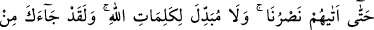
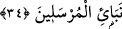

bâkîsin. Şüphesiz ben, onlardan intikamımı alırım. Benim intikamım ise çok şiddetlidir.
Âyetteki “zulüm”den maksat, onların gerçeği inkâr etmeleridir. Bu ise doğruyu
bilerek inkâr etmektir.
34. Andolsun ki senden önceki peygamberler de yalanlanmıştı. Onlar,
yalanlanmalarına ve eziyet edilmelerine rağmen sabrettiler, sonunda yardımımız
onlara yetişti. Allah’ın kelimelerini (kanunlarını) değiştirebilecek hiçbir kimse
yoktur. Muhakkak ki peygamberlerin haberlerinden bazısı sana da geldi.
“Andolsun senden öncede nice peygamberler yalanlanmıştı.” Bu ifade, Hz.
Peygamber (s.a.)’i tesellî etmek içindir. Çünkü bir musibet ve felaket umûmî olunca onu
kabullenmek nefse kolay gelir.
Yani, Allah’a yemin olsun ki senden önce çok sayıda değerli ve büyük peygamberler
de yalanlanmıştı. Ya da senin zamanından önceki zamanlarda nice peygamberler
yalanlanmıştı.
“Onlar yalanlanmalarına ve eziyet edilmelerine sabrettiler, sonunda yardımımız
onlara yetişti.” Yani, sabırlarının sonu Allah Teâlâ’nın onlara yardımı oldu. Şu halde
sen de kavminden gelen ezâ ve cefâya sabret.
Sabredenlere va’dedilen yardımdan maksat, ya delilleri ızhar etmek yoluyla olur ya
da peygamberlerin düşmanlarını yenmeleri veya düşmanlarının helak edilmesi suretiyle
olur.
Hâfız şöyle der:
Ey güzel ve tatlı yiyecekler görmüş ve yemiş kimse
Kalk, onun fazlasını helâda seyret
Pisliğe de ki: Nerde senin güzelliğin?
Nerde tabaklardaki hoş görüntün, kokun?
Nice parmaklar vardır, üstadlar onları kıskanır
Ancak sonunda iş işlerken titrer durur
Can gibi güzel ve baygın gözler
Sonunda görmez olur, sular damlatır
Aslanların safında giden aslan gibi yiğit er
Sonunda bir fareye mağlup düşer
Akıl çalan siyah ve miskler saçan kıvrımlı saçlar